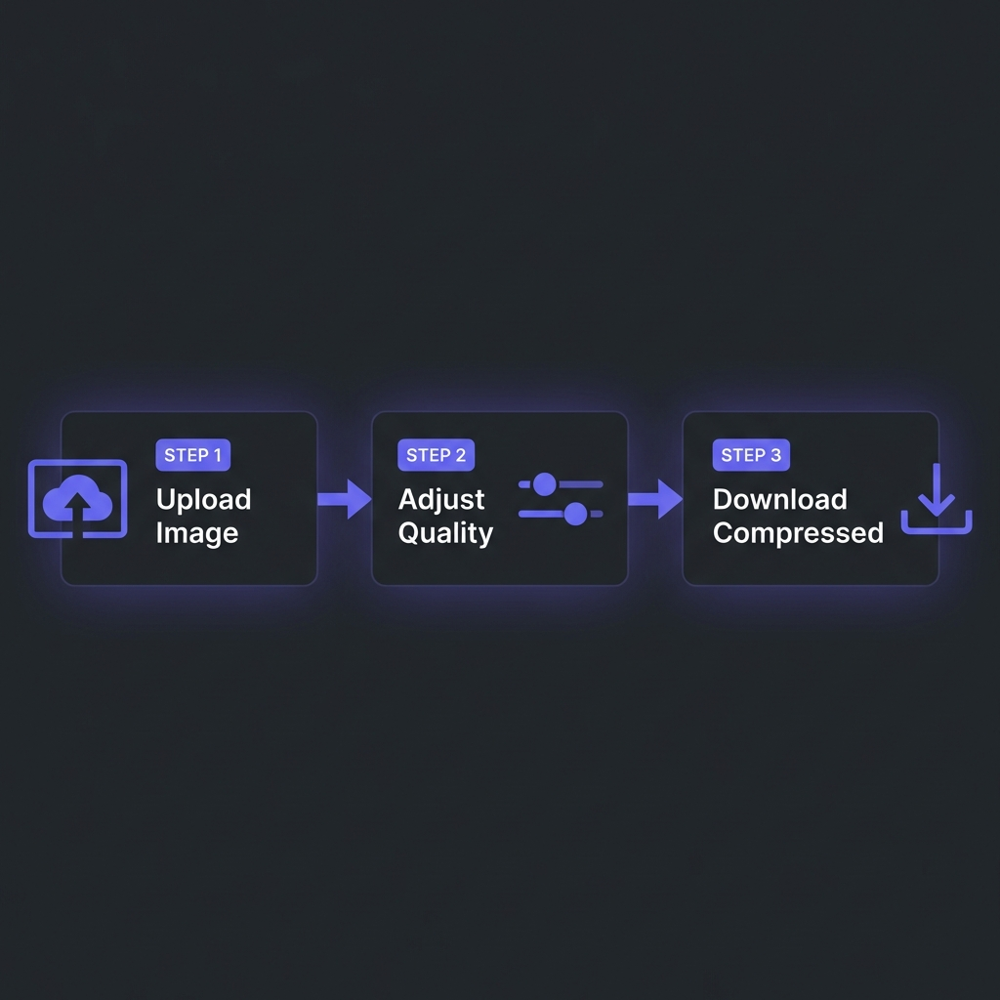

You can write the cleanest React code and deploy on the fastest edge server, but if your
homepage loads a 5MB unoptimized PNG file, your site will feel sluggish. Images account for
50-70% of total page weight on the average website.
Optimizing images isn't just about saving disk space; it's about User Experience (UX)
and SEO. Google's "Core Web Vitals" explicitly penalize slow-loading visual content.
This guide teaches you how to slash image sizes by 80% without noticeable quality loss.

How to Compress Images - Simple 3-step workflow
Format War: JPEG vs WebP vs AVIF
The days of just using JPEG for photos and PNG for graphics are over. Modern formats offer superior
compression.
JPEG (Legacy): Good compatibility, decent compression for photos. No transparency.
The fallback option.
PNG (Lossless): Perfect for screenshots and sharp edges (logos). Heavy. Supports
transparency.
WebP (Modern Standard): Developed by Google. Approx 30% smaller than JPEG for same
quality. Supports transparency and animation. Use this by default.
AVIF (Next Gen): Based on the AV1 video codec. Can be 50% smaller than JPEG.
Extreme compression but marginally slower to encode.
Pro Tip
Use the HTML <picture> element to serve AVIF to modern browsers and fall back
to JPEG for old ones (like Internet Explorer, though hopefully R.I.P.).
Lossy vs Lossless Compression
Lossless: Reduces file size by removing metadata (EXIF data, camera model, GPS) and
optimizing internal data structures. Zero quality loss. Great for archival.
Lossy: Intelligently removes color data that the human eye can't perceive. Can reduce a
5MB photo to 500KB (90% reduction) with barely visible difference. Essential for web
performance.
The Trade-off
Original.png (2.5MB)
|
v
Lossless Optimization -> 2.1MB (Saved 16%)
|
v
Lossy Compression (Quality 80) -> 350KB (Saved 86%!)
Tools and Libraries
You don't need Photoshop to optimize images.
Squoosh.app: Google's visual tool. Great for single images.
ImageMagick: CLI tool for bulk processing. mogrify -format webp *.jpg
Sharp (Node.js): The industry standard library for building image features in JS
apps.
Compress Images Instantly
Drag and drop generic PNGs/JPEGs. Convert them to highly optimized WebP files instantly. Run entirely
in your browser.
Google measures LCP (Largest Contentful Paint): how long it takes for the biggest
element (usually the hero image) to appear.
Good LCP: < 2.5 seconds.
Bad LCP: > 4.0 seconds.
If your hero banner is 2MB, on a 4G mobile connection it might take 4 seconds just to download. This
kills your LCP score and your ranking. Compressing it to 200KB ensures it loads in under 0.5s.
Frequently Asked Questions
Does WhatsApp compress images?
+
Yes, aggressively. WhatsApp and Messenger resize images to around 1600px and
apply heavy lossy compression to save bandwidth. This is why photos look "crunchy" when zoomed
in after sharing.
Is SVG better than PNG?
+
For Vectors (Logos, Icons, Illustrations), yes. SVG is infinitely scalable and
usually tiny (1KB-5KB). PNG is raster (pixel-based) and gets blurry when zoomed. Never use SVG
for photographs.
What is "Lazy Loading"?
+
It means deferring the loading of off-screen images until the user scrolls near them. Add
loading="lazy" to your <img> tags. This improves initial page
load speed significantly since the browser doesn't download footer images immediately.
Why does AVIF take so long to save?
+
AVIF uses complex algorithms derived from video encoding. It requires more CPU power to
encode (create) than JPEG, but it decodes (views) very fast. The file size
savings are usually worth the extra processing time on the server.
Can I just resize images with CSS?
+
NO! If you take a 4000px wide photo and set width: 300px in CSS,
the browser still downloads the full 4000px file (10MB) and then shrinks it visually. You waste
user data and slow down the site. Always resize the actual file on the server.
What is the best width for blog images?
+
A safe standard is 1200px wide for full-width header images and 800px
wide for in-content images. This looks sharp on Retina displays while keeping file
sizes manageable.